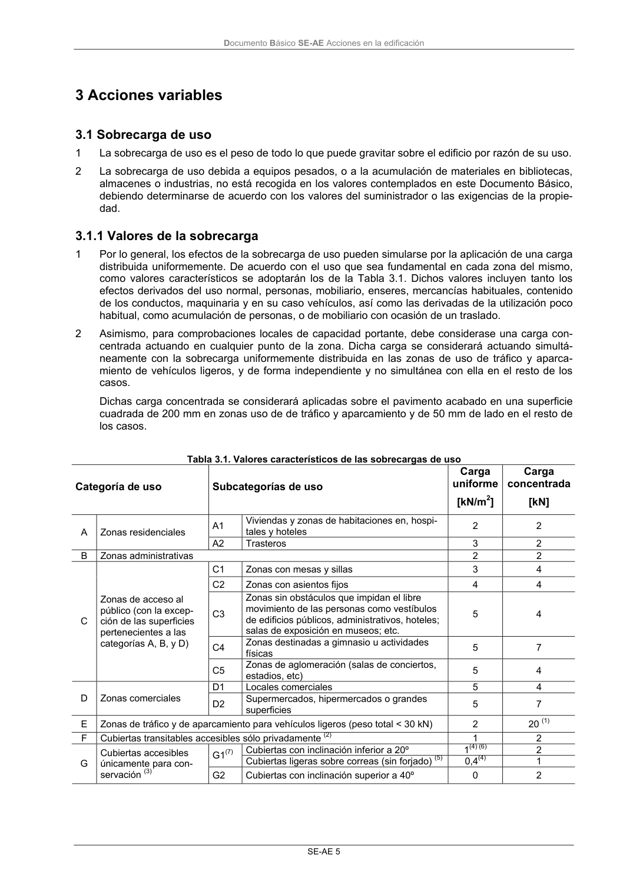

DB-SE-AE · Fragmento de PDF p9 · versión 2009-04 · capa oficial
Formatos: JSON compacto · Markdown · PDF fuente
Ámbito del documento · texto del ámbito · documento y tablas
ID técnico a0014 · PDF pág. 9 · jerarquía no validada por persona · no es capítulo: sin_linea_de_encabezado · padre: raíz · literal original en el contenido: «3 Acciones variables 3.1 Sobrecarga de uso»
3 Acciones variables 3.1 Sobrecarga de uso 3.1 Sobrecarga de uso 1 La sobrecarga de uso es el peso de todo lo que puede gravitar sobre el edificio por razón de su uso. 2 La sobrecarga de uso debida a equipos pesados, o a la acumulación de materiales en bibliotecas, almacenes o industrias, no está recogida en los valores contemplados en este Documento Básico, debiendo determinarse de acuerdo con los valores del suministrador o las exigencias de la propie- dad.

PDF fuente redistribuible: copia fiel enlazada en esta página (SHA256 verificado).